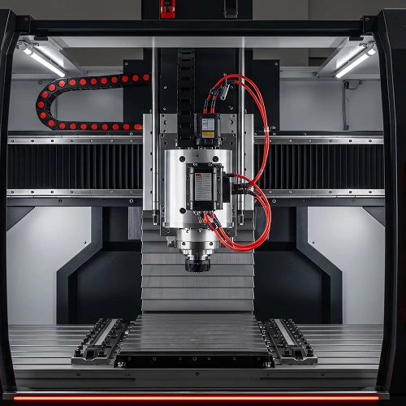
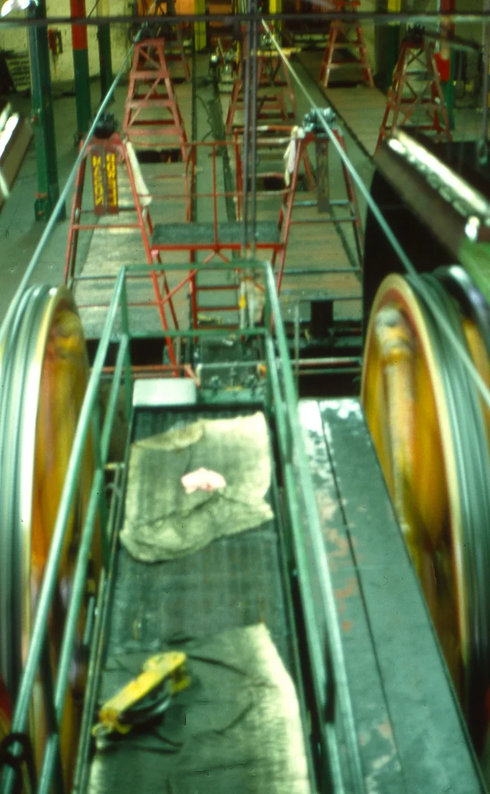

Движение начинается
с точного решения.
Конвейерные системы для производства и складской логистики. От отдельного участка до комплексной транспортирующей линии.
Каталог оборудования Каталог оборудования
Хорошая линия начинается с понимания груза, пространства и людей, которые будут с ней работать.


оборудования
Объединяем участки производства в единую работающую систему
ПОТОК ИНЖИНИРИНГ — концепция компании, которая проектирует транспортирующие системы под конкретный процесс. Подбор оборудования, компоновка линии, изготовление и запуск рассматриваются как единая задача.
Варианты оборудования для разных этапов производства.

Варианты оборудования для разных этапов производства.

Требования к будущей системе в одном документе.
Инженерные решения под
вашу задачу
Обсудим вашу
следующую линию?
Демонстрационные модели: от отдельного конвейера до участка транспортировки.
Ленточный конвейер ПТ-Л
Для перемещения коробок, упаковки и штучной продукции между рабочими участками.
Роликовый конвейер ПТ-Р
Для коробок и контейнеров с жёстким плоским основанием. Приводные и неприводные секции.
Модульный конвейер ПТ-М
Для транспортировки продукции на модульной ленте с учётом условий очистки и эксплуатации.
Наклонный конвейер ПТ-Н
Для передачи продукции между участками на разной высоте с подходящей рабочей поверхностью.
Изучите линейку и выберите оборудование для вашей задачи.
Точный подход к разным
задачам
Линия подачи к упаковочному участку
Концепция: связать рабочие места и организовать последовательную подачу коробок.
01
Склад
Поток между производственными участками
Концепция: согласовать переход между участками с разными рабочими высотами.
02
Комплектация
Комплектация складских заказов
Концепция: объединить зоны комплектации и упаковки в понятный маршрут.
03
Логистика
Участок с особыми условиями эксплуатации
Концепция: подобрать поверхности и конструкцию с учётом очистки и рабочей среды.
05
Логистика
Нужен ориентир?
Начните с описания груза и производственного процесса.
- Производство
- Склад
- Упаковка
- Комплектация
- Логистика
- Сборка
- Маркировка
- Сортировка
- Перемещение
- Отгрузка
- Интеграция
- Обслуживание
- Производство
- Склад
- Упаковка
- Комплектация
- Логистика
- Сборка
- Маркировка
- Сортировка
- Перемещение
- Отгрузка
- Интеграция
- Обслуживание
Отдельные узлы. Единая логика.
Понимание задачи
Согласованные требования
Прозрачные этапы
Целостная компоновка
Продуманное управление
Удобство обслуживания
Направления применения
Внимание к деталямна каждом
этапе
Перед подбором оборудования фиксируем вид груза, его размеры, рабочую среду и взаимодействие с соседними участками.
Начинаем с процесса
Привод, поверхность и схема управления выбираются совместно. Изменение одного узла учитывается в работе всей линии.
Согласовываем систему
Доступ к узлам, места очистки и замены деталей закладываются в конструкцию, а не добавляются после монтажа.
Думаем об обслуживании
Документация помогает понять принцип работы линии, ограничения и порядок взаимодействия с оборудованием.
Объясняем решения
Система может развиваться поэтапно: от самостоятельной секции к более сложному маршруту транспортировки.
Оставляем путь развития
01
Задача — начало проекта
06
Этапов от запроса до поддержки
Какое оборудование подойдёт?
Опишите процесс, а мы поможем сформировать понятный технический запрос.